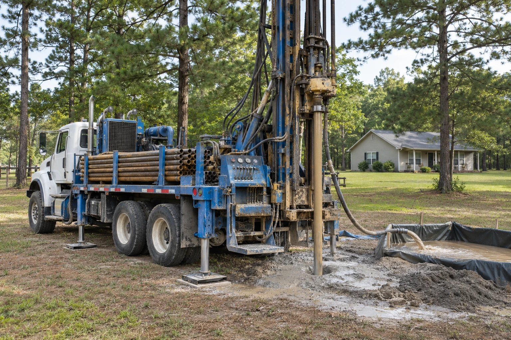
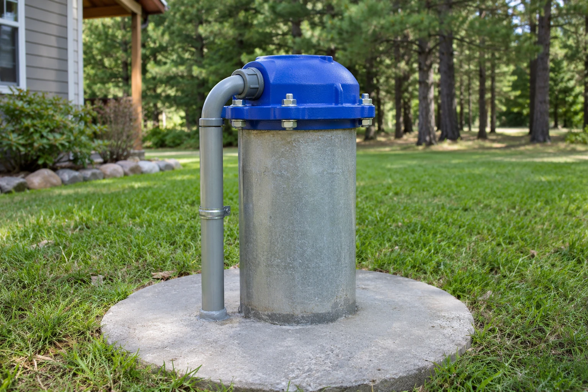
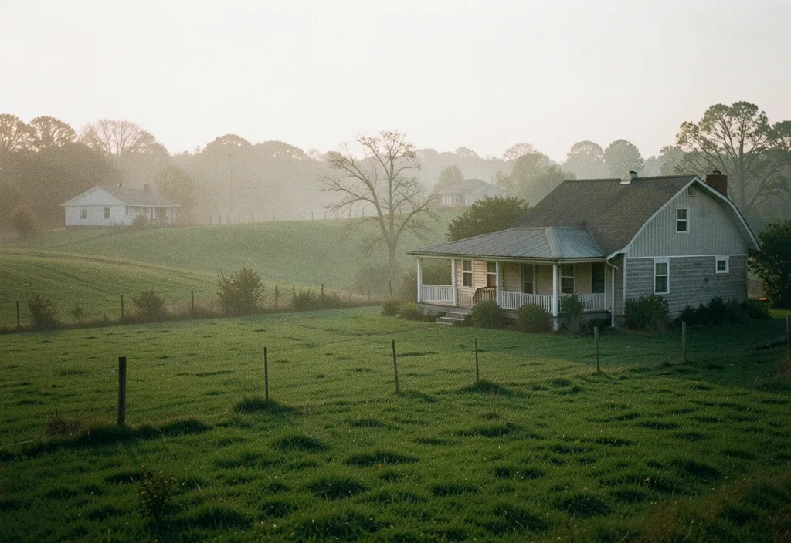

Well drilling
New water well projects planned for your property, use, and local conditions.
Planning a home water well or having trouble with a pump? Call (870) 555-5555 about your property and ask an independent provider about drilling, pump service, and water-system options.
Call (870) 555-5555Independent referral resource, not a well drilling contractor. Confirm service area, licensing, availability, and pricing directly.

A dependable well is more than a hole in the ground. It is a carefully considered water source, designed around your property and supported by people who know the region.
Water Wells Texarkana is a free referral resource for homeowners. We do not drill wells or perform pump work. Ask the answering provider to confirm whether they serve your address and handle the work you need.
Explore service inquiries
Residential well and pump inquiries for Greater Texarkana. Confirm service coverage and required credentials for your side of the Texas–Arkansas border.
New water well projects planned for your property, use, and local conditions.
Support for water pumps and essential system components when flow needs attention.
Explore filtration options to help your water feel and work better at home.
Keep your water system in good working order with attentive ongoing care.
Ask about the proposed work, local requirements, assessment fees, and a written estimate before hiring.
Ask whether the provider serves your property and has experience with local residential well conditions.
Discuss your household needs and request a clear explanation of the proposed work and costs.
Confirm who handles maintenance, warranties, and any follow-up visits for the system.

Every property is different. Describe how your household uses water and ask the provider what assessment is needed. Service availability and results are not guaranteed by this website.
“A dependable water supply should feel simple. Getting there takes experience.”
Call (870) 555-5555Illustrative water well images, not completed work by this referral website.